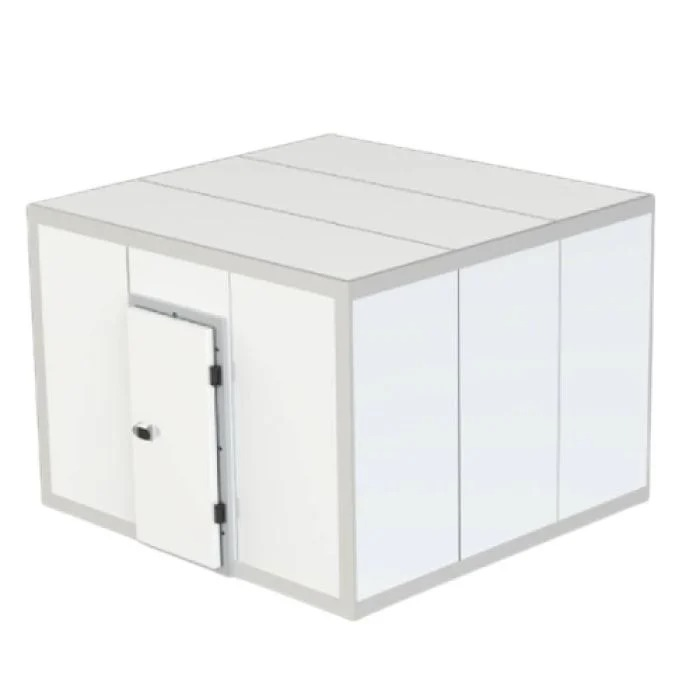

Altura: 2,70 m; Largura 3,43 m; Profundidade: 3,73 m
Câmara Fria Standard para Congelados CCC 3x3 - 220V
R$ 25.062,90
Câmara Modular Standard para congelados
Informações do Produto:
A Rauschenbach oferece o seu mais novo lançamento, a câmara modular Standard para congelados. Esse produto se encaixa perfeitamente para quem busca a conservação ideal de alimentos em baixas temperaturas. A câmara é constituída de equipamentos e instrumentos que possuem excelentes qualidades, os quais garantem maior durabilidade e melhor resistência. A câmara foi projetada para armazenar grande quantidade de produtos em seu interior, podendo alocar carnes, frangos, pescados, batatas fritas, gelos entre outros.